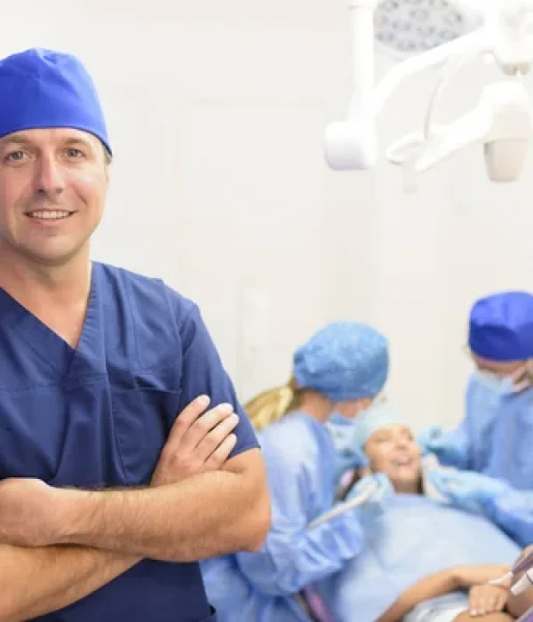
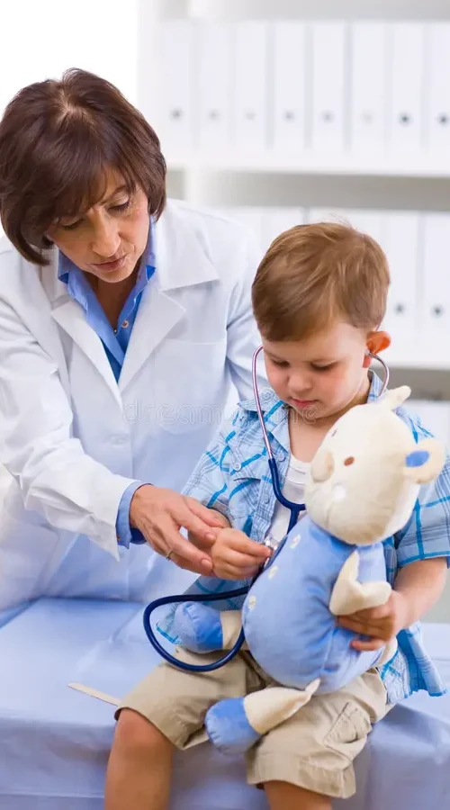
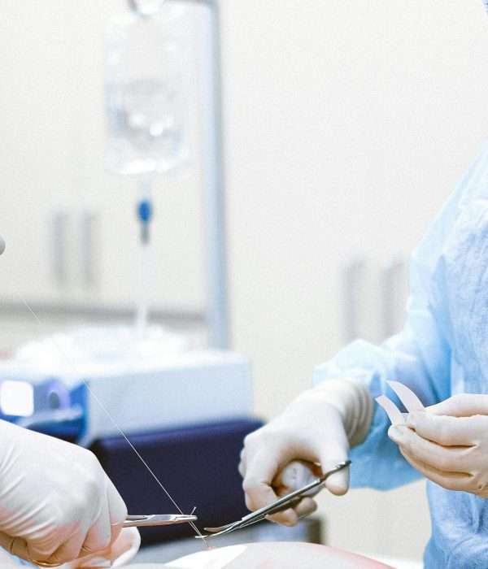
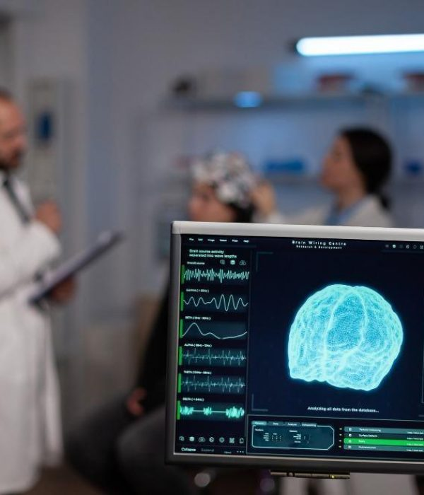
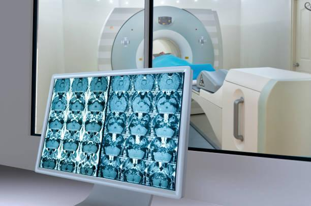
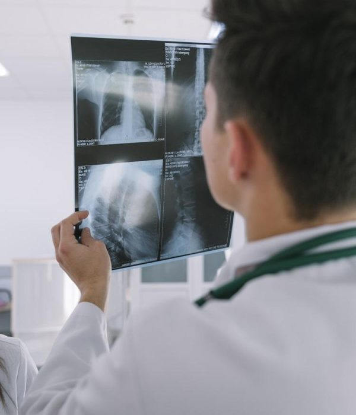
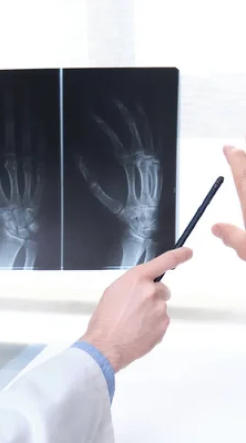

Pentru a veni în întâmpinarea pacienților, oferim acces la o gamă largă de specialități medicale, cu profesionalism, grijă și responsabilitate.
Îmbinăm serviciile medicale integrate cu profesionalismul, grija și responsabilitatea personalului medical. 24/24 suntem alături de tine.

Obține o imagine detaliată a stării tale de sănătate. Alege pachetele de analize și investigații concepute pentru a evalua principalele funcții ale organismului.
Întreabă despre cazul tău →
Servicii complete pentru diagnosticarea și tratamentul afecțiunilor cardiovasculare, indiferent de vârstă, cu ajutorul experților în domeniu din Turcia.
Întreabă despre cazul tău →
Chirurgia bariatrică și metabolică îmbunătățește calitatea vieții și oferă rezultate imediate și pe termen lung: scădere în greutate durabilă și menținerea acesteia.
Întreabă despre cazul tău →
Intervenții de înaltă calitate în chirurgia estetică, pornind de la injectare de botox și acid hialuronic până la chirurgia corectoare, implanturi mamare și lifting.
Întreabă despre cazul tău →
Servicii realizate la standarde de calitate în Turcia privind efectuarea diferitelor tipuri de proceduri chirurgicale, pentru o gamă largă de probleme de sănătate.
Întreabă despre cazul tău →
Disciplină chirurgicală ce se ocupă de patologia arterelor, venelor și vaselor limfatice din întregul organism.
Întreabă despre cazul tău →
Soluții pentru tratarea în Turcia a afecțiunilor curente ale pielii, cât și tratamente specifice și complexe.
Întreabă despre cazul tău →
Diagnostic și tratament pentru afecțiunile endocrine, la cele mai înalte standarde de tehnologie medicală.
Întreabă despre cazul tău →
Servicii de asistență, îndrumare și monitorizare în domeniul inseminării artificiale, cu cea mai avansată și mai mare rată de succes.
Întreabă despre cazul tău →
Servicii de prevenție, diagnosticare și tratament pentru afecțiunile sistemului digestiv, de către specialiști de top din Turcia.
Întreabă despre cazul tău →
Asistență medicală și îndrumare către experții hematologi din spitalele din Turcia, pentru boli hematologice benigne sau maligne.
Întreabă despre cazul tău →
Specialiști de top în diagnosticarea și tratarea afecțiunilor renale, dializă sau transplant de rinichi.
Întreabă despre cazul tău →
Servicii medicale de top în neurologie și neurochirurgie — specialități care tratează cele mai complexe afecțiuni, cu abordare multidisciplinară.
Întreabă despre cazul tău →
Specialiști pentru sănătatea femeilor, în toate etapele de viață: controale de rutină, teste de screening și tratamentul bolilor aparatului genital.
Întreabă despre cazul tău →
Specialiști în oftalmologie și tratament de ultimă oră pentru diverse probleme oculare, în unitățile medicale din Turcia.
Întreabă despre cazul tău →
Medicină preventivă, servicii de diagnostic și tratament pentru toate tipurile de cancer, cu tehnologii la standarde mondiale.
Întreabă despre cazul tău →
Diagnostic și tratament modern pentru afecțiunile nasului, gâtului și urechilor, în unitățile medicale partenere din Turcia.
Întreabă despre cazul tău →
Asistență medicală de înaltă calitate pentru afecțiuni ortopedice, în clinici de renume din Turcia, cu specializări în ortopedie și traumatologie.
Întreabă despre cazul tău →
Diagnostic și tratament de ultimă generație pentru afecțiunile pulmonare, cu aparatură ultramodernă.
Întreabă despre cazul tău →
Servicii pentru înlăturarea durerilor și recăpătarea stării de bine a întregului organism, prin recuperare medicală și medicină sportivă.
Întreabă despre cazul tău →
Acces la transplant de țesuturi și/sau organe și monitorizarea stării de sănătate a pacienților, înainte și după operație.
Întreabă despre cazul tău →
Diagnostic și tratament pentru afecțiunile urologice, cu personal cu experiență internațională.
Întreabă despre cazul tău →
Servicii integrate de stomatologie: implantologie, chirurgie dentară, protetică, estetică dentară (Hollywood smile, coroane Emax, fațete), ortodonție și profilaxie.
Întreabă despre cazul tău →Contactează-ne direct sau completează formularul online — primești gratuit opinia medicală și costul estimat, direct de la specialiștii din Istanbul.
Centrele noastre de alergologie sunt dotate cu echipamente de ultimă generație pentru diagnostic precis și tratamente eficiente. Printre serviciile oferite.
Vezi specialitatea →Centrele noastre de boli infecțioase sunt echipate cu cele mai noi tehnologii pentru diagnostic și tratament eficient..
Vezi specialitatea →
Servicii de chirurgie orală și maxilo-facială de vârf, beneficiind de tehnologii avansate și de expertiza medicală a specialiștilor noștri pentru a vă oferi.
Vezi specialitatea →
Servicii de chirurgie pediatrică de vârf, beneficiind de tehnologii avansate și de expertiza medicală a specialiștilor noștri în îngrijirea copiilor pentru a vă.
Vezi specialitatea →
Servicii de chirurgie toracică de vârf, beneficiind de expertiza medicală a specialiștilor noștri în diagnosticul și tratamentul afecțiunilor toracice pentru a vă.
Vezi specialitatea →
Servicii de chirurgie plastică și microchirurgie reconstructivă de vârf, beneficiind de expertiza medicală a specialiștilor noștri în estetica corporală și.
Vezi specialitatea →
Centrele noastre de medicină internă sunt echipate cu cele mai noi tehnologii pentru diagnostic și tratament eficient..
Vezi specialitatea →
Servicii de medicină nucleară de vârf, beneficiind de tehnologii de ultimă generație și de expertiza medicală a specialiștilor noștri pentru a vă oferi tratamente precise.
Vezi specialitatea →
Tratamentul eficient al acestora necesită o abordare personalizată, bazată pe tipul, localizarea și dimensiunea tumorii, precum și pe starea generală de sănătate.
Vezi specialitatea →
Servicii de oncologie radiologică de vârf, beneficiind de tehnologii avansate și de expertiza medicală a specialiștilor noștri în tratarea cancerului cu.
Vezi specialitatea →
Servicii de pediatrie de înaltă calitate, beneficiind de expertiza medicală a specialiștilor noștri în îngrijirea copiilor pentru a vă oferi tratamente și îngrijire.
Vezi specialitatea →
Servicii de radiologie intervențională de vârf, beneficiind de tehnologii avansate și de expertiza medicală a specialiștilor noștri în domeniul imagisticii și al.
Vezi specialitatea →
Servicii de reumatologie de înaltă calitate, beneficiind de expertiza medicală a specialiștilor noștri în diagnosticul și tratamentul afecțiunilor reumatologice pentru a.
Vezi specialitatea →